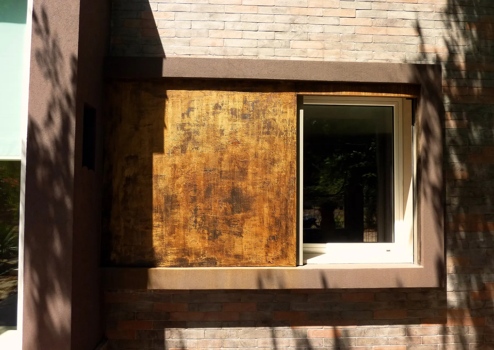

Sicurezza Sismica per Alberghi Storici: Adeguamento Senza Chiudere l'Attività

In Breve
- 👉 La sicurezza sismica va misurata, non presunta: servono prove e diagnosi reali.
- 👉 Adeguare senza chiudere richiede fasi di cantiere e logistica chirurgiche.
- 👉 Un piano SAL strutturale evita extra‑budget e fermo camere.
Un hotel storico che chiude per lavori strutturali perde fatturato, staff e reputazione. Ma ignorare la sicurezza sismica significa esporsi a rischi legali e tecnici che possono bloccare l’attività all’improvviso. Per un investitore, la sfida è chiara: aumentare la sicurezza senza interrompere il cash‑flow. Questo si ottiene con diagnosi vere, una strategia di intervento per lotti e un cronoprogramma che si incastra con l’operatività dell’hotel. La parola chiave è controllo: di rischio, di tempi e di budget. Senza metodo, l’adeguamento sismico si trasforma in un pozzo di costi imprevedibili.
1. Diagnosi strutturale: numeri prima delle scelte
Ogni edificio storico ha una storia strutturale diversa. Prima di parlare di interventi, servono prove in situ e una lettura reale dei materiali. Qui non si improvvisa: le decisioni devono essere basate su dati oggettivi. Le attività operative includono:
- rilievi geometrici e materici con mappatura delle lesioni;
- prove con martinetti piatti su murature portanti;
- endoscopie per verificare stratigrafie nascoste;
- modellazione strutturale per individuare criticità reali.
Solo dopo questa fase si definiscono interventi mirati e compatibili con il vincolo storico. È il passaggio che evita demolizioni inutili e costose.
2. Strategie di rinforzo compatibili con un hotel in esercizio
Intervenire senza chiudere significa lavorare per fasi e con soluzioni a bassa invasività. L’obiettivo è garantire sicurezza e continuità operativa. I sistemi più efficaci dipendono dall’edificio, ma la logica è sempre la stessa: interventi localizzati e controllabili. In genere consideriamo:
- cerchiature e rinforzi localizzati su aperture critiche;
- catene e tiranti per migliorare il comportamento scatolare;
- fibre composite o intonaci armati compatibili con i vincoli;
- interventi sui solai per ridurre deformazioni e vibrazioni.
La scelta non è “più forte” ma “più efficace”. Ogni intervento deve ridurre il rischio con il minimo impatto sull’attività.
3. Cantiere per lotti e gestione dell’operatività
Un hotel non può diventare un cantiere aperto. La gestione per lotti è la strategia che salva il fatturato: si lavora su blocchi di camere, si pianificano i periodi di bassa occupazione e si controlla la rumorosità. Il piano operativo include:
- sequenza di lavori per piani o ali dell’edificio;
- barriere antipolvere e sistemi di filtrazione per aree attive;
- fasi rumorose programmate prima dei picchi turistici;
- comunicazione chiara con direzione e front‑office.
Così si mantiene la continuità del servizio e si riducono le recensioni negative dovute ai lavori.
4. Budget, SAL e controllo extra‑budget
L’adeguamento sismico è una delle voci più rischiose per un investitore. Per questo serve un computo metrico dettagliato e un sistema di SAL legato a verifiche reali, non a percentuali generiche. La gestione corretta prevede:
- computo metrico analitico con voci dedicate alle opere strutturali;
- capitolato tecnico con criteri di misurazione trasparenti;
- SAL verificati in cantiere con rilievi e foto;
- fondo extra‑budget controllato per varianti inevitabili.
Un controllo serio trasforma un rischio strutturale in un investimento sostenibile.
5. Documentazione finale e riduzione del rischio assicurativo
Dopo i lavori strutturali, la documentazione è parte del valore. Un albergo con interventi certificati riduce il rischio percepito da clienti e assicurazioni. La fase finale deve includere:
- collaudo statico e relazioni di fine lavori;
- aggiornamento del fascicolo tecnico dell’edificio;
- report fotografico degli interventi per trasparenza;
- condivisione con assicurazioni per eventuale revisione premi.
Il valore non è solo nella struttura rinforzata, ma nella tracciabilità dell’intervento. È un asset che aumenta la liquidità dell’immobile.